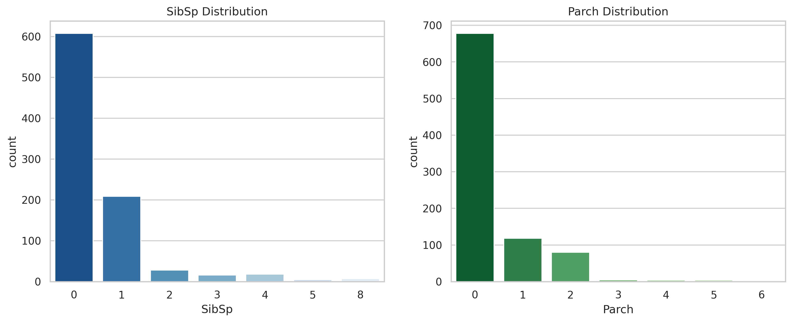
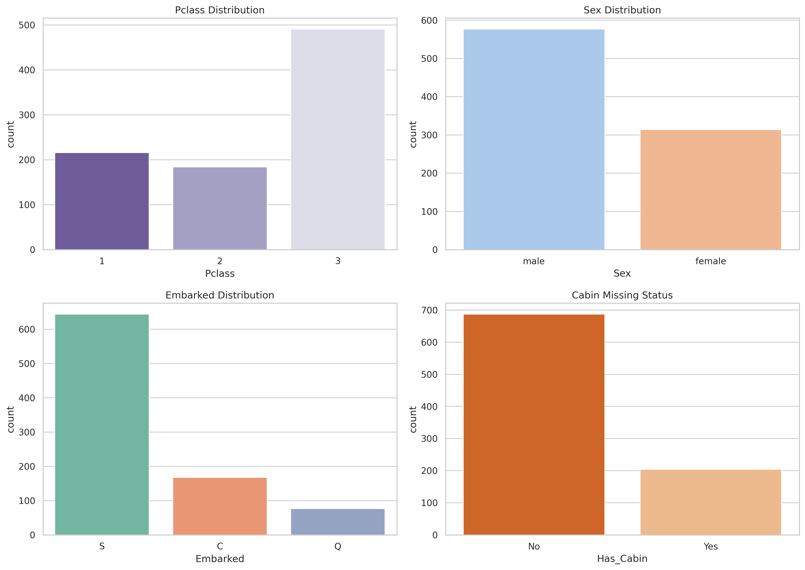
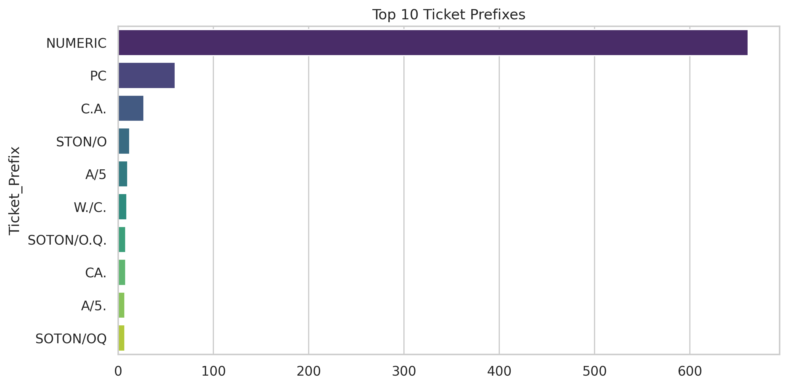
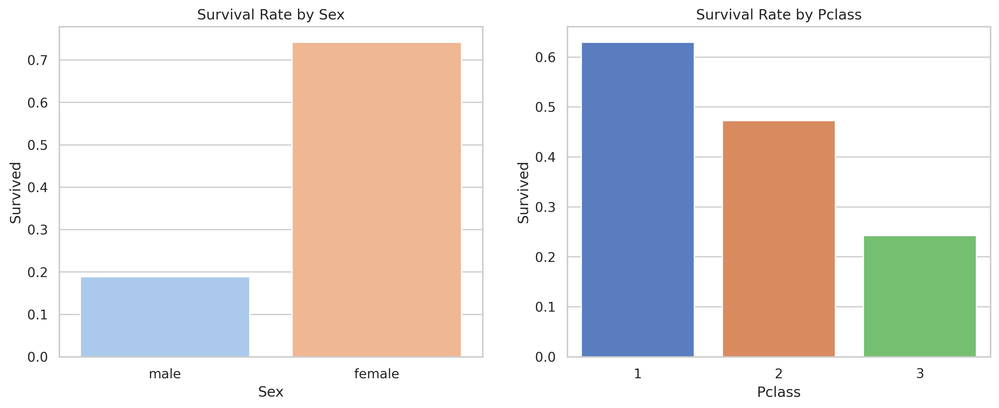
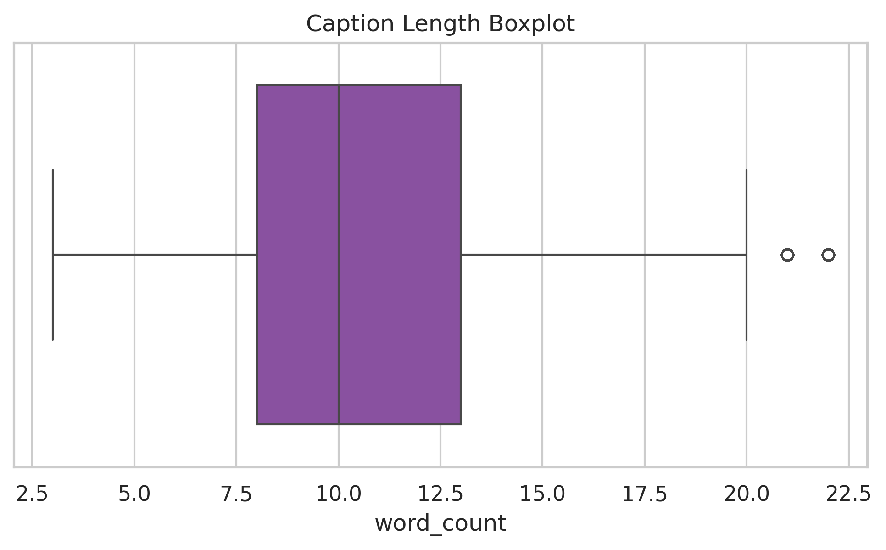
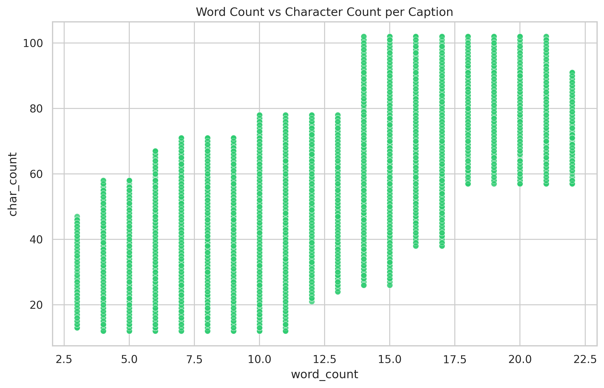

1. Dataset Overview

Fig 1.1: Survival rate demonstrating class imbalance in target feature.
2. Missing & Duplicate Values
| Feature | Missing Count | Missing % | Severity |
|---|
| Cabin | 687 | 77.10% | 🔴 Critical |
| Age | 177 | 19.87% | 🟡 Medium |
| Embarked | 2 | 0.22% | 🟢 Low |
3. Numerical Features Distribution

Fig 3.1: Distribution of continuous features (Age and Fare). Note the strong right-skew in Fare.

Fig 3.2: Distribution of family-related discrete features (SibSp and Parch).
4. Categorical Features Distribution

Fig 4.1: Breakdown of passengers by Class, Gender, Embarkation Port, and Cabin status.

Fig 4.2: Extraction and frequency of alphanumeric ticket prefixes.
5. Correlation Analysis

Fig 5.1: Pearson Correlation matrix of numerical variables. Pclass and Fare show moderate negative correlation.
6. Target Analysis

Fig 6.1: Survival rates broken down by Gender and Ticket Class.
7. Outlier Detection

Fig 7.1: Boxplots highlighting extreme values in Fare and Age columns.
8. Key Insights & Conclusion
- Demographic Disparity: Gender and Age were the strongest demographic predictors of survival. Females exhibited a drastically higher survival rate compared to males, reflecting the "women and children first" protocol.
- Socio-Economic Impact: Pclass and Fare strongly correlated with survival length. First-class passengers had a significantly higher survival rate than those in third class.
- Distribution Shapes & Outliers: Features like Fare and SibSp are immensely right-skewed with heavy kurtosis. These massive outliers require logarithmic transformations before modeling.
1. Dataset Overview & Samples
📝 Message Samples by Class
Class: HAM (Normal)
"I'm gonna be home soon and i don't want to talk about this stuff anymore tonight, k? I've cried enough today."
Class: SPAM
"URGENT! You have won a 1 week FREE membership in our £100,000 Prize Jackpot! Txt the word: CLAIM to No: 81010 T&C www.dbuk.net LCCLTD POBOX 4403LDNW1A7RW18"
Key Insights: Dataset Overview
- The dataset size (5,572 samples) is optimal for training robust machine learning and NLP models.
- Missing data is non-existent. The primary text column is 100% complete.
- The average length of a message (~15 words) requires precise feature extraction since context window is narrow.
2. Distribution & Labeling

Fig 2.1: Frequency Distribution (Left) and Class Proportion (Right).
Key Insights: Target Distribution
- The label distribution exhibits a strong class imbalance (~86.6% Ham), indicating models are highly likely to overfit towards the majority class.
- Strategy: Applying techniques like SMOTE or adjusting class weights is necessary to improve the decision boundaries for the minority class (Spam).
3. Stopword Analysis
Key Insights: Stopwords
- A massive ~40.7% of the entire text corpus consists of non-informative stopwords (e.g., 'i', 'to', 'you', 'a').
- While highly frequent, these words carry zero predictive weight and obscure meaningful patterns.
- Action Taken: Removing stopwords is a crucial preprocessing step. It effectively halves the Vector Space Dimensionality and reduces statistical noise.
4. Review Length & Language

Fig 4.1: Word Count Distribution highlighting the difference between Spam and Ham.
Key Insights: Text Structure
- The Word Count Distribution for Spam is tightly clustered around higher word counts (25-30 words) compared to Ham, which is generally much shorter.
- Language detection algorithms confirm the dataset is predominantly English, meaning standard NLP dictionaries (like NLTK or Scikit-Learn's default stops) will operate perfectly.
5. Vocabulary Statistics & Top Words

Fig 5.1: Top Words by Frequency (Before applying TF-IDF).
Key Insights: Vocabulary Richness
- Looking at the Overall Top Words grid, basic action verbs like "call", "get", and "go" appear frequently across all messages.
- Because they appear everywhere, they offer poor distinguishing power for predictive models. We need TF-IDF to penalize them.
6. Unigram TF-IDF Analysis
Key Insights: TF-IDF Unigrams
- TF-IDF Magic: By applying Term Frequency-Inverse Document Frequency, generic words are penalized, allowing unique sentiment-bearing keywords to surface.
- Spam Signatures: Dominated by strong promotional nouns/verbs such as "free", "txt", "mobile", and "claim".
- Ham Signatures: Highlighted by personal affirmations and conversational tokens like "ok", "good", "come", and "love".
7. Bigram TF-IDF Analysis
Key Insights: N-Gram Context
- Bigrams naturally capture context that single words lose.
- Extracted phrases like "customer service", "free entry" (Spam) versus "let know", "good morning" (Ham) act as the most powerful discriminative features for classification models.
8. Semantic Similarity & Clouds

Fig 8.1: Average Cosine Similarity Matrix between document vectors.

Fig 8.2: Vocabulary visualization separated by Class.
Key Insights: Semantic Distance
- Cosine Similarity Heatmap: This measures the vector distance between classes. Noticeably, Spam and Ham vectors share an extremely low similarity score (~0.0075), proving their vocabularies are fundamentally disjointed.
- WordClouds: Visualizing by label visually proves that the dataset is partitioned into two highly distinct semantic profiles, priming it perfectly for binary classification.
1. Dataset Overview & Sample

Fig 1.1: Random samples of different object classes from the dataset.

Fig 1.2: Image distribution across all 10 categories.
Key Insights: Dataset Overview
- The dataset contains 50,000 training images across 10 classes, providing a robust foundation for training deep Convolutional Neural Networks (CNNs).
- The class distribution is perfectly balanced (exactly 5,000 images per class), which minimizes class imbalance issues during training. Oversampling or undersampling techniques are not required.
- With 10 distinct classes containing diverse backgrounds, this is a relatively complex multi-class classification problem.
- Applying data augmentation techniques (e.g., horizontal flipping, slight shifting) is highly recommended to improve model generalization and combat overfitting.
2. Data Quality

Fig 2.1: Variance of Laplacian (Sharpness/Blur) and Average Brightness across different classes.
Key Insights: Data Quality
- The dataset contains no missing or corrupted images, indicating strong data integrity.
- Blur & Sharpness: Because the resolution is natively very low (32x32), the Laplacian variance (sharpness) is generally low across all classes. However, classes with distinct edges (like 'airplane' or 'ship') show slightly higher variance outliers compared to natural subjects like 'frog'.
- Brightness Diversity: There is a significant variation in image brightness. Classes like 'ship' and 'airplane' (often photographed against bright skies) exhibit much higher average brightness than 'cat' or 'dog' (often photographed indoors).
- Recommended actions: Apply global contrast normalization or Z-score normalization per channel to stabilize feature extraction regardless of lighting conditions.
3. Image Statistics

Fig 3.1: Resolution uniformity mapping.

Fig 3.2: Pixel intensity distributions across Red, Green, and Blue.
Key Insights: Image Statistics
- The width and height distributions show a single dot at 32x32 pixels. This strict uniformity eliminates the need for computational-heavy resizing during preprocessing, ensuring stable input dimensions for CNNs.
- The RGB channel distributions reveal that the Blue channel has a lower mean intensity, suggesting an overall warmer tone across the dataset (likely due to many indoor, animal, and ground-vehicle subjects).
- The overlapping distributions of RGB channels indicate that while color helps, the dataset relies heavily on shape and spatial textures for classification.
4. Feature Analysis

Fig 4.1: Correlation matrix between RGB channels, Brightness, Contrast, and Sharpness (Blur).
Key Insights: Feature Engineering
- High RGB Correlation: Strong correlations exist between the Red, Green, and Blue channels (r > 0.85), indicating redundant color information. Brightness is perfectly correlated with the channels as it is derived from them.
- Independence of Contrast/Blur: Image Contrast and Sharpness (Blur) show very weak correlations with color intensity. This means structural properties (edges, textures) provide completely unique and valuable information to the model, distinct from color.
- Recommendation: CNN architectures naturally extract these structural features. However, if using traditional ML algorithms (like SVM or Random Forest), dimensionality reduction (PCA) on colors and explicitly feeding contrast/edge features would be highly beneficial.
1. Dataset Overview
Image & Captions Example
Image: 1000268201_693b08cb0e.jpg
1. "A child in a pink dress is climbing up a set of stairs in an entry way ."
2. "A little girl in a pink dress going into a wooden cabin ."
3. "A girl going into a wooden building ."
Image: 2073444485_c0b4353f86.jpg
1. "Two young guys with shaggy hair look at their hands while hanging out in the yard ."
2. "Two young white males are outside near many bushes ."
3. "Two men in green shirts are standing in a yard ."
2. Caption Text Analysis

Fig 2.1: Caption Length Distribution.

Fig 2.2: Boxplot highlighting length outliers.

Fig 2.3: Scatter mapping word count against character count.
Key Insights: Text Distribution
- Consistency: The vast majority of captions fall neatly between 8 and 14 words. The dataset is tightly controlled and highly descriptive.
- Outliers: There are very few captions under 4 words or over 30 words, making sequence padding in LSTM/Transformer models highly efficient without wasting memory on sparse matrices.
3. Vocabulary & Word Analysis

Fig 3.1: Top 15 Most Common Words (Excluding basic stopwords like 'a', 'the', 'in').
Key Insights: Vocabulary Focus
- Nouns representing distinct entities (man, dog, boy, water, people) dominate the vocabulary.
- This clearly reflects the nature of image captioning tasks: the text is heavily focused on describing physical subjects and their environments rather than abstract concepts.
4. Image Quality & Dimension Analysis

Fig 4.1: Width vs Height Distribution.

Fig 4.2: RGB Intensity Distribution across dataset.
Key Insights: Image Structure
- Dimension Diversity: Unlike CIFAR-10, Flickr images have varying aspect ratios. Most images are scaled to have their longest edge at exactly 500 pixels. Center-cropping or padding will be necessary before feeding them into a CNN like ResNet50 or VGG16.
- Color Distribution: The dataset has a relatively balanced RGB distribution, providing rich color contexts for feature extraction algorithms.